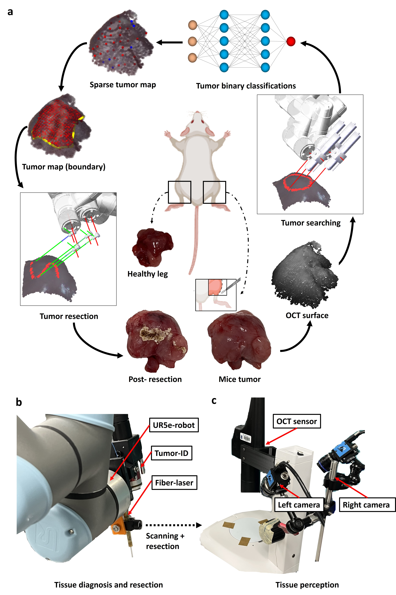
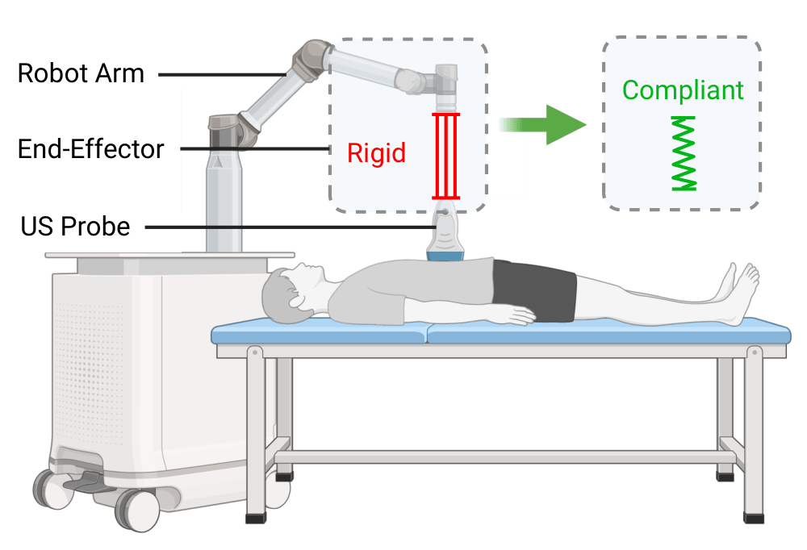
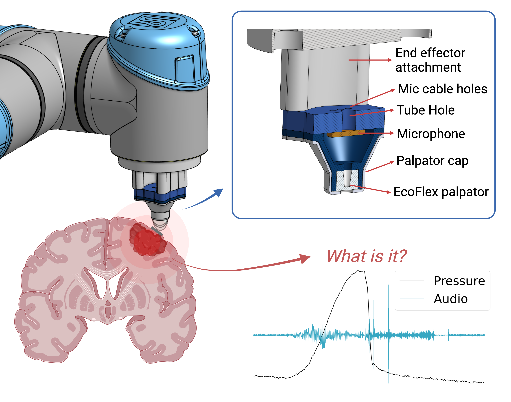
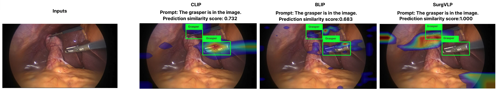
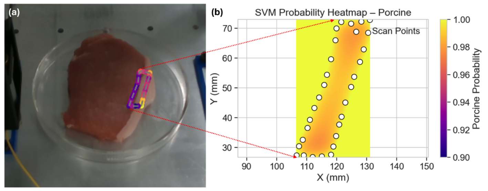
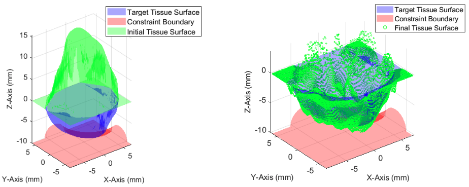
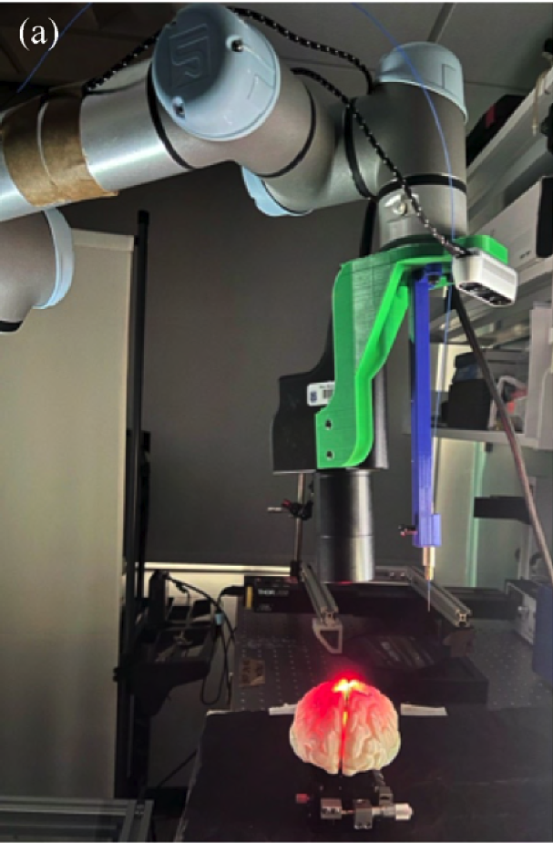

I build robots that see, decide, and act — transforming multimodal sensing into precise autonomous action.
Final year PhD Candidate at Duke University working with Patrick Codd and Boyuan Chen, working across multimodal perception, surgical autonomy, and machine learning. My systems close the loop from raw sensory data to real-world intervention.
Active Projects

TumorMap: Fully-Automated 3D Tumor Mapping & Resection
Three-laser platform (OCT + fluorescence + cutting scalpel) with deep learning for noncontact tumor resection in murine models. Submillimeter accuracy.
See, Plan, Cut
MPC-based volumetric laser surgery with OCT guidance.
PalpAid
Pneumatic tactile sensor for tissue palpation. Mentored project.
Robotic Laser Surgery: Overview & Vision — A comprehensive look at our work on autonomous laser surgery, multimodal sensing, and the future of robotic surgical systems.Produced by our awesome undergrad Olivia Liu.
News
Systems That See, Decide, and Act
Full-stack platforms integrating hardware, sensing, and algorithms for high-stakes autonomous operation.
TumorMap: A Laser-Based Surgical Platform for 3D Tumor Mapping and Fully-Automated Tumor Resection
Multimodal surgical platform — leveraging OCT, laser-induced fluorescence, RGB images, to generate 3D pathological maps with learning-based mapping, enabling autonomous resection through laser scalpel. Validated in murine osteosarcoma and soft-tissue sarcoma with submillimeter accuracy.
See, Plan, Cut: MPC-Based Volumetric Laser Surgery
Sampling-based MPC for OCT-guided volumetric ablation. Optimal trajectories respecting tissue constraints.
PalpAid: Multimodal Pneumatic Tactile Sensor
Pneumatic tactile sensor for tissue palpation — mentored undergraduate project.
Portable Dual Sensor Visualization
Large-area dual sensing for real-time surgical guidance in resource-constrained settings.
SurgXBench: Explainable VLM for Surgery
Vision-language model benchmark for surgical scene understanding.
Multimodal Tissue Boundary Delineation
Sensor fusion for tissue transition detection. Mentored project.
Brain-Mimicking Phantom for Photoablation
Tunable optical/mechanical phantoms for validating robotic laser surgery systems.
3D Laser-Tissue Agnostic Surgical Planning
Data-driven method for robotic laser surgical planning from 3D scans.
TumorMap: Laser-Based Platform for 3D Tumor Mapping and Automated Resection

Design and Evaluation of a Compliant Quasi Direct Drive End-Effector for Safe Robotic Ultrasound Imaging

See, Plan, Cut: MPC-Based Autonomous Volumetric Robotic Laser Surgery

PalpAid: Multimodal Pneumatic Tactile Sensor for Tissue Palpation

SurgXBench: Explainable VLM Benchmark for Surgery

Where is the Boundary? Multimodal Sensor Fusion for Tissue Delineation

Sampling-Based MPC for Volumetric Ablation in Robotic Laser Surgery

Portable Dual Sensor Visualization for Robotic Laser Surgery
Extracting Critical Info from Clinicians’ Notes to Identify Dementia Severity
A Rule-Based Framework to Identify Severity of Dementia from Unstructured Electronic Health Record Data
Blinded Study: Laser-Induced Fluorescence for Spine Tumor Differentiation
3D Laser-and-Tissue Agnostic Method for Robotic Laser Surgical Planning
Brain-Mimicking Phantom for Photoablation and Visualization
Fluid Flow and Heat Transfer in Microchannels with Varying Cross-Section
Building the Next Generation
15+ students with outcomes at ICRA, RoboSoft, BSN, and placements at Google, Microsoft, Medtronic.
Reimagining Surgery for Rural Needs: Robotics Teleoperation
Bass Connections course — teleoperated laser surgery for rural clinics. Optomechanical assembly, HW/SW integration. 4.25/5 rating.
Intro to Medical Robotics
ML for Medical Robotics and Design of Experiments. Scaffolded self-learning for diverse experience levels.
Collaborative Expeditions
Self-learning modules on DOE, ML, Literature Review with reflections and case studies.
Experiment Design & Research Methods
Research scoping, rapid prototyping, portfolio development. 3 semesters.
Students & Outcomes
Beyond the Lab
Leadership, community innovation, and institution-building.

Futures+: Multi-National Deep Tech Innovation Program
Co-led a 6-month innovation program across Bhutan, Indonesia, India, and Singapore with 16 partners. Three finalist solutions deployed in northeast India and Indonesia. Direct engagement with farming communities shaped modular, repairable design principles.
TEDxNITW
Founded the TEDx chapter at NIT Warangal. Organized the inaugural event with 400+ attendees — speaker curation, sponsorships, and production.
Duke Garage Lab
Lab & Curriculum Development Fellowship. Co-designed and built Duke’s newest prototyping space for the MEMS capstone program.
Design Health Fellow
Duke Design Health program — clinical immersion and needs-finding methodology for healthcare innovation.
MEMS Graduate Student Committee
President. Department events, student advocacy, and cross-lab networking for 100+ graduate students.
ICRA Evolving Landscape of Surgical Robotics Workshop Organizer
“The Evolving Landscape of Surgical Robotics” at ICRA 2025. Curated lineup of 12 international researchers.
Features & Coverage
Videos, interviews, and media coverage of my work.
Robotic Laser Surgery: Overview & Vision — A comprehensive overview of our work on autonomous robotic laser surgery, multimodal sensing, and the future of precision surgical systems. Produced by our awesome undergrad Olivia Liu.
See, Plan, Cut
MPC-based autonomous volumetric robotic laser surgery with OCT guidance. Full paper video.
PalpAid
Pneumatic tactile sensor for tissue palpation. Full paper video for the mentored RoboSoft 2026 project.
Drones Transforming Research in Duke Forest
Feature on our multi-drone acoustic sensing work for environmental monitoring and wildlife tracking.
Day in the Life: Duke Robotics
A look at my day-to-day work at Duke — from the Brain Tool Lab to surgical robotics, sensing, and building systems that see, decide, and act.
Master’s Degrees in Mechanical Engineering, Duke University
Featured in Duke MEMS program video highlighting graduate research and robotics at Duke.
Background & Vision
I am a doctoral candidate in the Brain Tool Lab at Duke, advised by Patrick Codd, M.D. and Boyuan Chen, Ph.D. My work sits at the intersection of robotics, multimodal perception, and surgical systems.
I build closed-loop platforms that transform rich sensory data into precise autonomous action — from autonomous laser surgery (OCT + fluorescence + cutting lasers) to neural implicit representations for surgical navigation, acoustic sensing for multi-drone coordination, and multimodal tactile sensing for tissue assessment.
Before Duke, I co-led Futures+ across four countries and founded TEDxNITW. These experiences inform how I think about technology design for communities that need it most.
I serve as Lab Manager at the Brain Tool Lab and am Instructor of Record for a Bass Connections course developing teleoperated surgical systems for rural clinics.
I am on the academic job market seeking faculty, postdoc, and research positions in robotics.
Education
- Ph.D. MEMS, Duke
2022–2026 (expected) - M.S. MEMS, Duke
2020–2021 - B.Tech ME, NIT Warangal
2015–2019
Reviewing
- IEEE T-MECH ·IEEE RA-L · CoRL · IROS
- ISMR · BSN · RoboSoft · JMRR